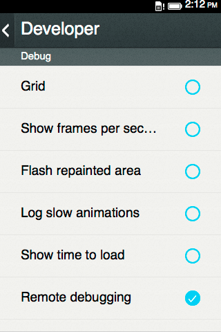
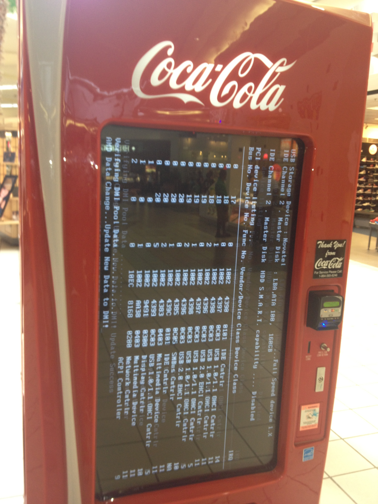
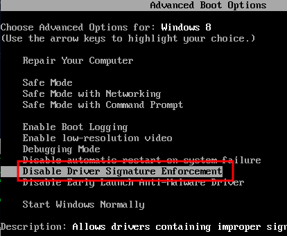
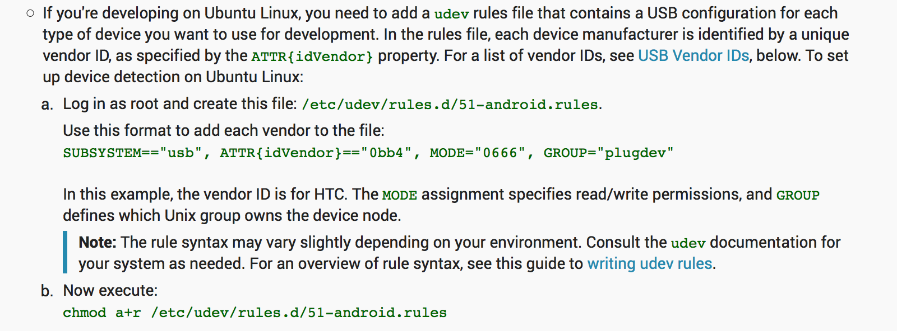
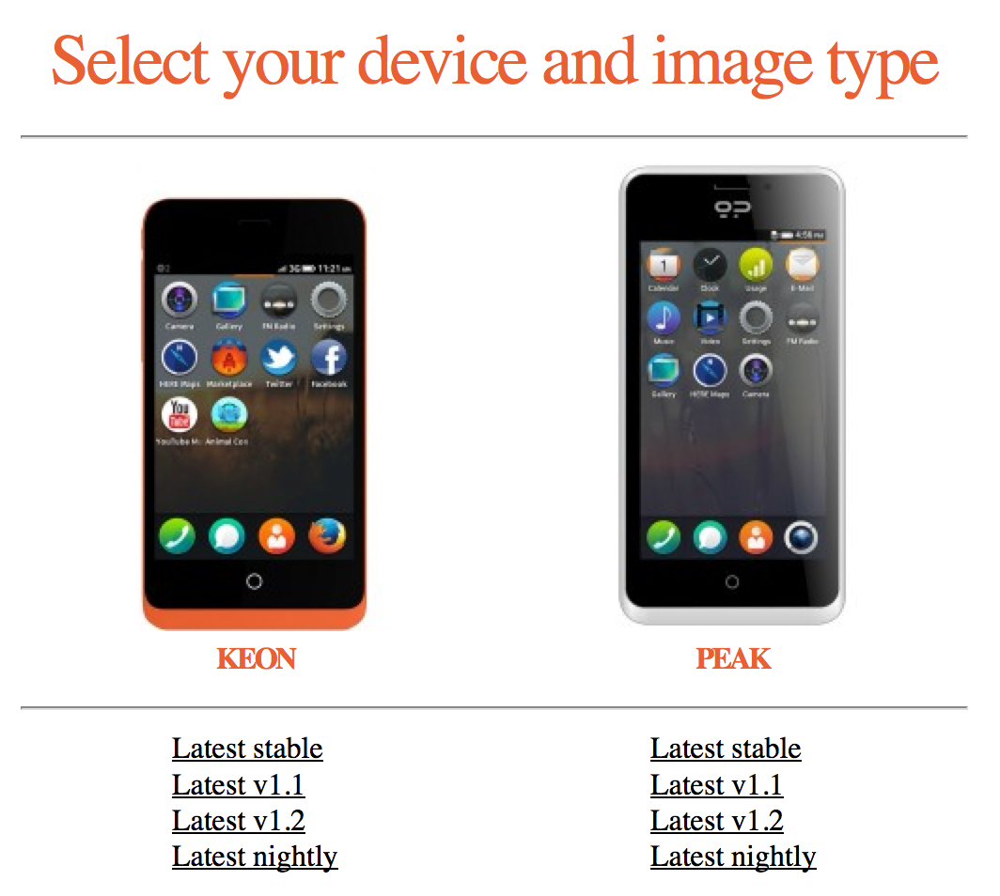
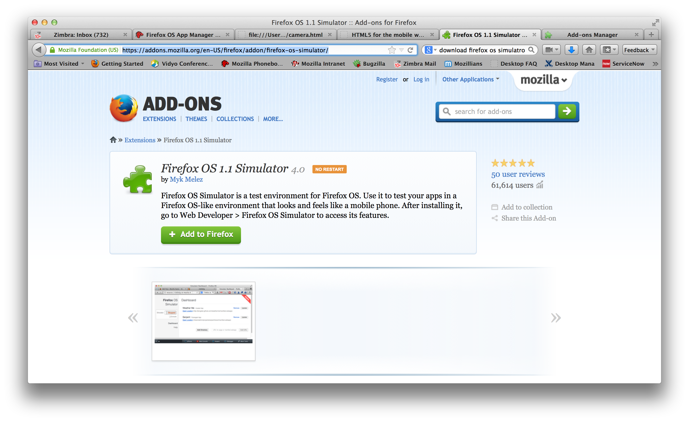
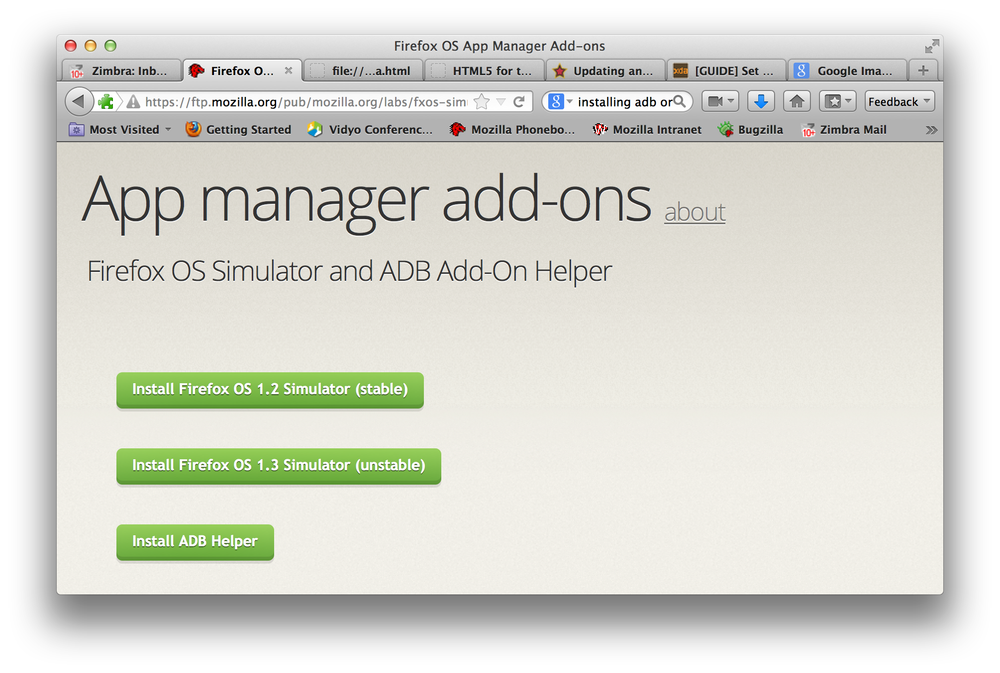
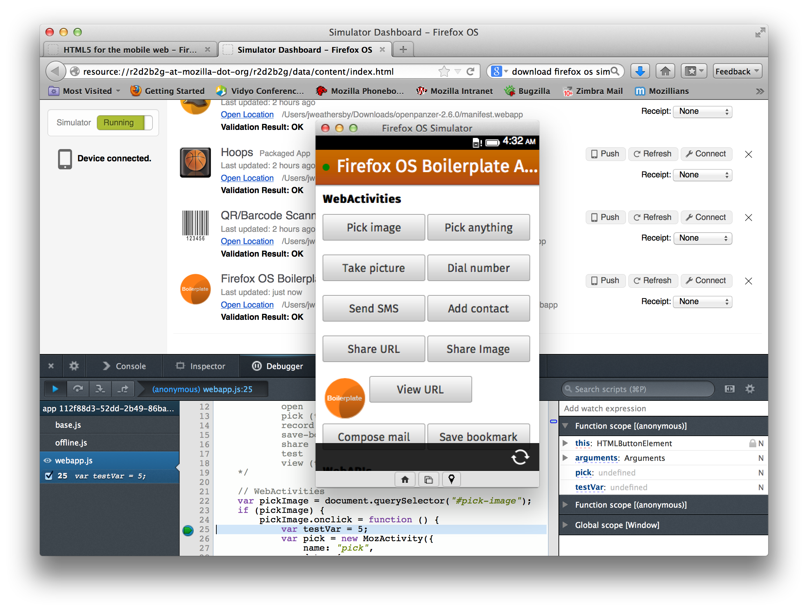
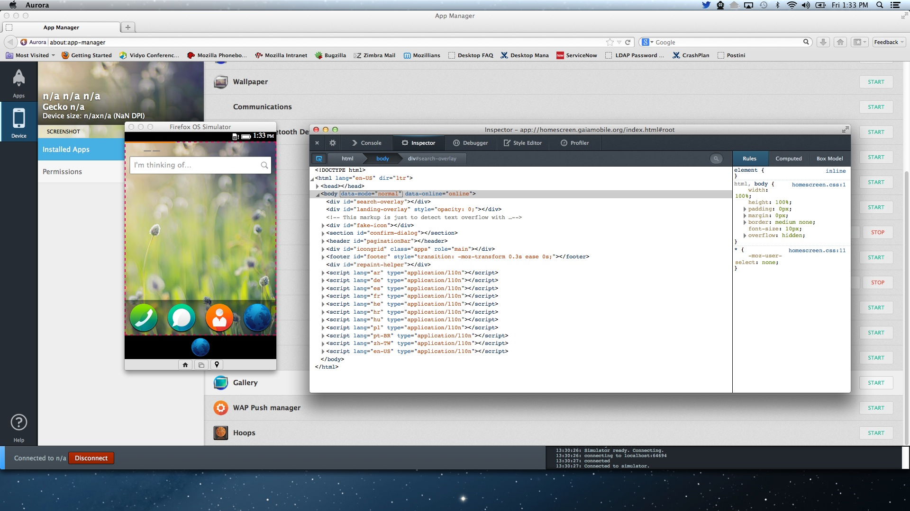

Firefox OS Workshop Budapest
Firefox OS Workshop Budapest - Nov 2013
Jason, Weathersby, Budapest, Hungary, November 23, 2013
- Setup Connection for your Phone
- Setup Either 1.1 or 1.2 Simulator
- Demo Simulators
Device information -> More information -> Developer

http://downloads.geeksphone.com/drivers/usb_driver.zip

Setting up Windows - Windows 8
http://www.craftedge.com/tutorials/driver_install_windows8/driver_install_win8.html

Keon Device - 05c6 idVendor
sudo service udev restart

- Firefox 25 - Firefox OS 1.1 - Simulator 4.0
- or
- Firefox 26 - Firefox OS 1.2 or Greater - Simulator 1.2
http://downloads.geeksphone.com/

https://addons.mozilla.org/en-US/firefox/addon/firefox-os-simulator/

https://ftp.mozilla.org/pub/mozilla.org/labs/fxos-simulator/
https://developer.mozilla.org/en-US/Firefox_OS/Using_the_App_Manager

Demo of Firefox OS Simulator

Demo of Firefox OS App Manager

App Manager will be here soon!